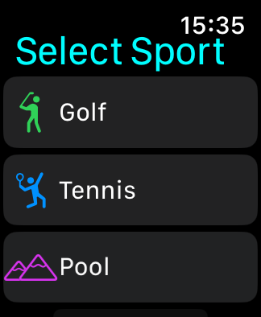
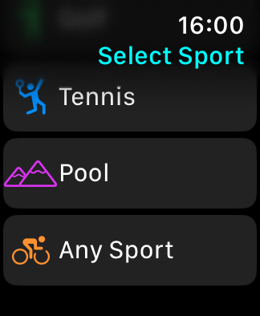

Pick a sport and go
Golf, tennis, pool, or a plain counter for anything else. No setup, no accounts, no clutter.
Stays on screen. Lower your wrist between points and Scorekeeper is still there when you look back, with Always On so the score stays visible. Your game is saved as you go, so if the watch closes the app you pick up exactly where you left off.
Haptic taps confirm every point and win, and a watch face complication shows the live score.